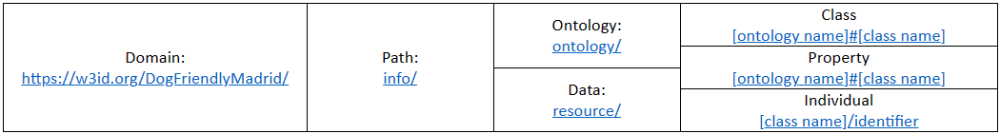
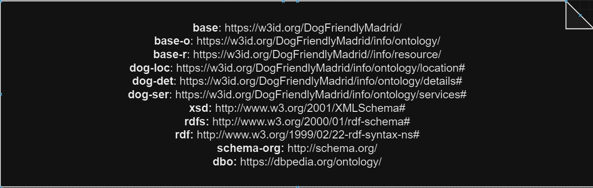

Fuente para perros
Info Database:
Se presenta la relación total de fuentes de agua potable de beber tanto para mascotas, como las destinadas a mascotas y a personas de la ciudad de Madrid. Estas fuentes están situadas tanto en vía pública como en zonas verdes, parques y jardines.
Puede consultar si las fuentes se encuentran o no operativas, y cerradas temporalmente y dispone además de información por barrio, distrito y dirección.
La relación de fuentes de beber “en servicio” puede sufrir variaciones temporales por averías, bien por desapariciones de grifos o cortes por averías en la red de agua potable de las que se suministran.
La información proporcionada se actualiza diariamente.
Puede consultar también información sobre las fuentes de agua potable para beber para la ciudadanía de la ciudad de Madrid, tantos las situadas en vía pública como aquellas que están en zonas verdes, parques y jardines, en el conjunto de datos.
| Column | Type | Comments | Problems |
|---|---|---|---|
| ID | Integer | Número de identificación de la papelera, tiene 6 dígitos y es un número positivo. | |
| Estado | String | Nos dice el estado en el que se encuentra. | |
| Cod_Barrio | Integer | Número de 3 cifras positivo, identifica al barrio. | |
| Barrio | String | Nombre del barrio en donde se encuentra la fuente. | |
| Distrito | String | El distrito donde se encuentra la fuente. | |
| Coord_gis_x | Float | Es la coordenada x de la fuente. | |
| Coord_gis_y | Float | Es la coordenada y de la fuente. | |
| Sistema_Coord | String | Es el sistema de coordenadas usado para ubicar la fuente. | |
| Latitud | Float | La latitud en la que se encuentra la fuente. | |
| Tipo_Via | String | Nos indica el tipo de vía en la que se encuentra la fuente. | |
| Nom_Via | String | Nombre de la vía. | |
| Num_Via | String | Identifica la vía. | Presenta números y caracteres. |
| Codigo_Postal | Integer | El código postal donde esta ubicada la fuente, son números enteros positivos de 5 cifras. | |
| Fecha_Instalacion | Fecha | La fecha de la instalación de la fuente. | Varias casillas se encuentran en blanco. |
| Uso | String | Nos indica para quien esta destinado el uso de la fuente ej. Personas, mascotas o ambas. | |
| Modelo | String | Modelo de la fuente. |
Parques y jardines
Info Database:
La relación siguiente corresponde a los principales parques y zonas verdes de Madrid cuya conservación corresponde al Ayuntamiento de Madrid, con sus características detalladas.
|
En el listado se incluyen tanto jardines y pequeñas zonas verdes, como los clasificados como parques históricos, singulares o forestales, así como las rosaledas y colecciones botánicas.
Conviene aclarar que esta información corresponde a los parques y jardines más significativos de cada distrito, pero no a todas las zonas verdes, ya que existen también multitud de
pequeños espacios verdes, medianas, rotondas, isletas, etc. que no están descritos en esta relación.
| Column | Description | Type | Comments | Problems |
|---|---|---|---|---|
| PK | campo clave, dentro de la web municipal, para uso interno. | Int | ||
| NOMBRE | denominación del equipamiento/instalación/organismo/... o entidad a la que se refiera el conjunto de datos. | string | 2 blanks | |
| HORARIO | de apertura, de actividades, de secretaria, etc. Días y horario de actividad regular. Horarios de periodos excepcionales. Fechas de cierre | string | Información Heterogénea | |
| EQUIPAMIENTO | detalle de espacios internos especializados. Por ej. en Centros Culturales, se relacionan Salas de exposiciones, aulas, auditorios, salas de ensayo, salas de lectura o estudio, ascensores, aseos accesibles, cafetería, etc | string | Varias celdas que se podrían unir | |
| TRANSPORTE | estaciones de metro e indicación de línea; líneas de bus; estaciones de Renfe. | string | 5 Blanks | |
| DESCRIPCIÓN | información adicional; por ej.: otros equipamientos con los que se comparte la sede física; información de venta de entradas, etc | string | 4 Blanks | |
| ACCESIBILIDAD | 0 = No accesible, 1 = Accesible, 2 = Instalación parcialmente accesible para personas con movilidad reducida, 3 = Sin información sobre accesibilidad para personas con movilidad reducida, 4 = Lengua de signos, 5 = Señalización podotáctil, 6 = Bucle de inducción magnético. | Int | ||
| CONTENT-URL | nombre del recurso en Internet, normalmente en la web municipal www.madrid.es para su localización. Se accede a la ficha existente en dicha web | String | ||
| NOMBRE-VIA | denominación del vial. | String | ||
| CLASE-VIAL | tipo de vial: calle, avenida, paseo, etc | String | Elementos que se deben combinar | |
| TIPO-NUM | V, S/N, KM. | String | ||
| NUM | número del equipamiento en el vial. Pueden incluir descriptivos. | int | 5 blanks | |
| PLANTA | nivel que ocupa en el inmueble. | Todas blanks | ||
| PUERTA | puerta que ocupa en el inmueble. | string | 195 Blanks | |
| ESCALERAS | escalera de acceso | Todas Blanks | ||
| ORIENTACION | Detalles descriptivos de la dirección, si los hubiese. Por ej., “frente a”; “con vuelta a”, “acceso por”, etc | string | 200 Blanks | |
| LOCALIDAD | Madrid | string | Celdas que se pueden combinar | |
| PROVINCIA | Madrid | string | ||
| CODIGO POSTAL | int | 3 blanks | ||
| COD-BARRIO | int | 12 blanks | ||
| BARRIO | denominación del barrio | string | 4 blanks | |
| COD-Districto | int | 12 blanks | ||
| DISTRICTO | denominación del distrito | string | ||
| COORDENADA-X | coordenada de 6 caracteres sobre plano de la ciudad. | float | 3 blanks | |
| COORDENADA-y | coordenada de 7 caracteres sobre plano de la ciudad. | float | 3 blanks | |
| COORDENADA-LATITUD | coordenada latitud en el sistema de referencia WGS84 | string | ||
| COORDENADA-LONGITUD | coordenada longitud en el sistema de referencia WGS84 | string | ||
| TELEFONO | teléfonos de contacto | string | 196 Blanks | |
| FAX | número de fax | string | Todos Blanks | |
| dirección de correo electrónico, si la tuviese | string | 198 Blanks | ||
| Tipo | descripción de la tipología de la instalación. Se encuentra al final de la cadena de texto. | string | 21 Blanks |
Papeleras caninas
Info Database:
En la ciudad de Madrid se encuentran instaladas más de 92.000 papeleras (sin incluir las papeleras existentes ni en los parques históricos ni en los forestales de la ciudad) y de éstas,
más de 6.000 con expendedor de bolsas biodegradables para recogida de excrementos caninos para que los ciudadanos puedan eliminar los pequeños residuos que generen en su transitar
por la vía pública.
La fijación de estos expendedores de bolsas pueden estar situados en farolas, semáforos, señales, postes y muros para su sujeción directamente en la pared.
| Column | Type | Comments | Problems |
|---|---|---|---|
| ID | Integer | En el caso de la papelera son 6 dígitos, para el barrio son 3 y para el distrito 2. | |
| GarbageBin | String | Es la clase papelera cuya propiedad es el ID, latitude y longitude. | |
| Neighborhood | string | Neighborhood representa a la clase barrio con propiedad ID. | |
| District | String | District representa a la clase distrito con propiedad ID. | |
| Latitude | String | Latitude es una propiedad de papelera. | |
| Longitude | string | Longitude es una propiedad de papelera. | |
| Thoroughfare type | String | Es el tipo de vía. | |
| Thoroughfare | String | Es el nombre de la vía. | |
| Number | String | Es el número de la vía que puede contener una letra. | |
| Postal Code | Integer | Es un número de 5 dígitos. |
Resource Strategy
Ontology namespaces
Classes
- City: http://schema.org/City
- Services: https://w3id.org/DogFriendlyMadrid/info/ontology/services/Services
- DrinkingFountain: https://w3id.org/DogFriendlyMadrid/info/ontology/services#DrinkingFountain
- PetDrinkingFountain: https://w3id.org/DogFriendlyMadrid/info/ontology/services#PetDrinkingFountain
- DogGarbageBin: https://w3id.org/DogFriendlyMadrid/info/ontology/services#DogGarbageBin
- Park: http://schema-org#Park
- DogZone: https://w3id.org/DogFriendlyMadrid/info/ontology/services#DogZone
- Address: https://w3id.org/DogFriendlyMadrid/info/ontology/location#address
- State: http://schema-org#State
- Neighborhood: https://w3id.org/DogFriendlyMadrid/info/ontology/location#Neighborhood
- District: https://w3id.org/DogFriendlyMadrid/info/ontology/location#District
- Street: https://dbpedia.org/ontology/Street
- GeoCoordinates: http://schema-org#GeoCoordinates
- CityCoordinates: https://w3id.org/DogFriendlyMadrid/info/ontology/location#CityCoordinates
- SeniorZone: https://w3id.org/DogFriendlyMadrid/info/ontology/route/FuentesAgua#Via
- ChildrenZone: https://w3id.org/DogFriendlyMadrid/info/ontology/services#ChildrenZone
Subclases de services
Properties City
- name: http://schema-org#name
Properties CityCoordinates
- hasXCityPosition: https://w3id.org/DogFriendlyMadrid/info/ontology/location#hasXCityPosition
- hasYCityPosition: https://w3id.org/DogFriendlyMadrid/info/ontology/location#hasYCityPosition
Properties Park
- identifier: http://schema-org#identifier
- name: http://schema-org#name
- description: http://schema-org#description
- reachebleBy: https://w3id.org/DogFriendlyMadrid/info/ontology/details#reachebleBy
- hasTrees: https://w3id.org/DogFriendlyMadrid/info/ontology/details#hasTrees
- isAccessible: https://w3id.org/DogFriendlyMadrid/info/ontology/details#isAccessible
- mainEntityOfPage: http://schema-org#mainEntityOfPage
Properties DogZone
- identifier: http://schema-org#identifier
- description: http://schema-org#description
- hasStatus: https://w3id.org/DogFriendlyMadrid/info/ontology/details#hasStatus
Properties GeoCoordinates
- latitude: http://schema-org#latitude
- longitude: http://schema-org#longitude
Properties Services
- identifier: http://schema-org#identifier
- description: http://schema-org#description
- hasStatus: https://w3id.org/DogFriendlyMadrid/info/ontology/details#hasStatus
- hasAuxAddress: https://w3id.org/DogFriendlyMadrid/info/ontology/details#hasAuxAddress
- ofModelType: https://w3id.org/DogFriendlyMadrid/info/ontology/details#ofModelType
Properties Address
- postalCode: http://schema-org#postalCode
Properties State
- name: http://schema-org#name
Properties Neighborhood
- hasLocationId: https://w3id.org/DogFriendlyMadrid/info/ontology/location#hasLocationId
- label: https://www.wikidata.org/wiki/Property:P276#locatedIn
Properties District
- hasLocationId: https://www.wikidata.org/wiki/Property:P276#locatedIn
- label: http://www.w3.org/2000/01/rdf-schema#label
Properties Street
- isOfStreetType: https://w3id.org/DogFriendlyMadrid/info/ontology/location#isOfStreetType
- label: http://www.w3.org/2000/01/rdf-schema#label
- hasStreetNumber: https://w3id.org/DogFriendlyMadrid/info/ontology/location#hasStreetNumber
Object Properties
- hasCity: https://w3id.org/DogFriendlyMadrid/info/ontology/location#hasCity
- geo: http://schema-org#geo
- containsPlace: http://schema-org#containsPlace
- mainEntityOfPage: http://schema-org#mainEntityOfPage
- hasCityPosition: https://w3id.org/DogFriendlyMadrid/info/ontology/location#hasCityPosition
- hasDistrict: https://w3id.org/DogFriendlyMadrid/info/ontology/location#hasDistrict
- hasNeighborhood: https://w3id.org/DogFriendlyMadrid/info/ontology/location#hasNeighborhood
- hasService: https://w3id.org/DogFriendlyMadrid/info/ontology/services#hasService
- hasState: https://w3id.org/DogFriendlyMadrid/info/ontology/location#hasState
- hasAddress: https://w3id.org/DogFriendlyMadrid/info/ontology/location#hasAddress
- hasStreet: https://w3id.org/DogFriendlyMadrid/info/ontology/location#hasStreet